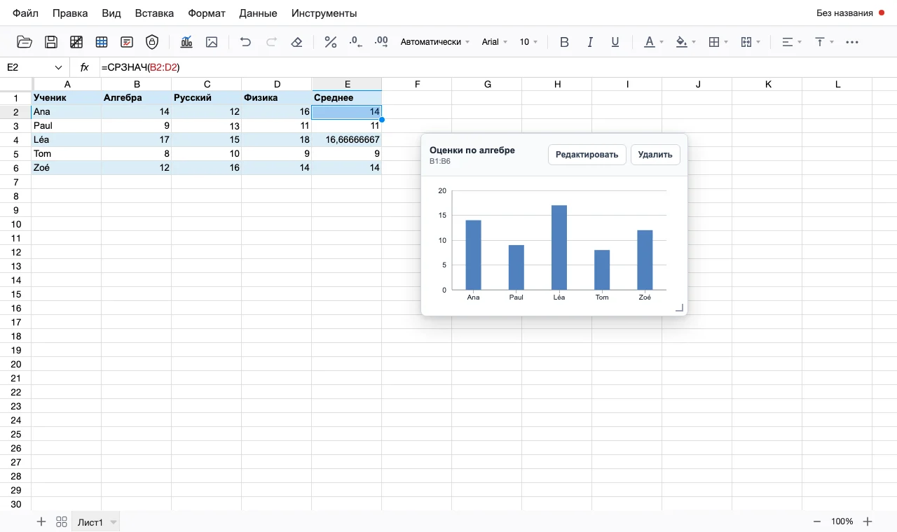

Руководство пользователя DocCells
DocCells — многоязычная электронная таблица, которая работает в браузере без установки и учётной записи. Она открывает и сохраняет книги Excel (.xlsx).

Главное в шести действиях
| Задача | Действие |
|---|---|
| Ввести данные | щёлкнуть ячейку, набрать, Enter (ввод данных) |
| Вычислить | набрать = и формулу: =СРЗНАЧ(B2:B6) (формулы) |
| Скопировать формулу | потянуть синий маркер выделения или Ctrl D (заполнение) |
| Оформить | меню Формат или кнопки (оформление) |
| Построить диаграмму | выделить данные, (диаграммы) |
| Сохранить | Ctrl S: файл Excel (открытие и сохранение) |
Содержание
- Открытие и сохранение: файлы, недавние файлы, восстановление, Google Таблицы, язык.
- Интерфейс: меню, кнопки, строка формул, вкладки, масштаб.
- Ввод данных, выделение, копирование, заполнение.
- Формулы, списки и комплексные числа, именованные диапазоны, листы.
- Числовые форматы, оформление, условное форматирование, строки и столбцы.
- Сортировка, фильтр, поиск, флажки, списки и календарь, диаграммы и спарклайны, изображения и ссылки, печать.
- Защита книги для учеников, публикация и встраивание, работа с DocGeo.
- Справочник: 314 функций, сочетания клавиш, совместимость с Excel, вопросы и ответы.
Обозначения
- Кнопки обозначены значками ( полужирный).
- Ctrl на Mac означает ⌘.
- Формулы записаны по-русски: русские имена функций, десятичная запятая, точка с запятой между аргументами. DocCells показывает их на языке интерфейса.
- Поиск по руководству: / или Ctrl K. Слова можно вводить в любом порядке; имя функции, русское или английское, ведёт к её строке.